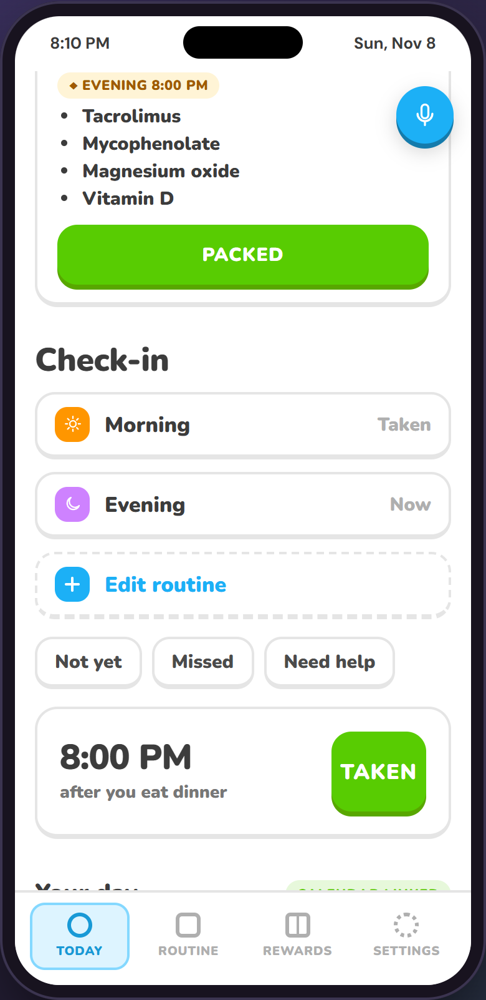
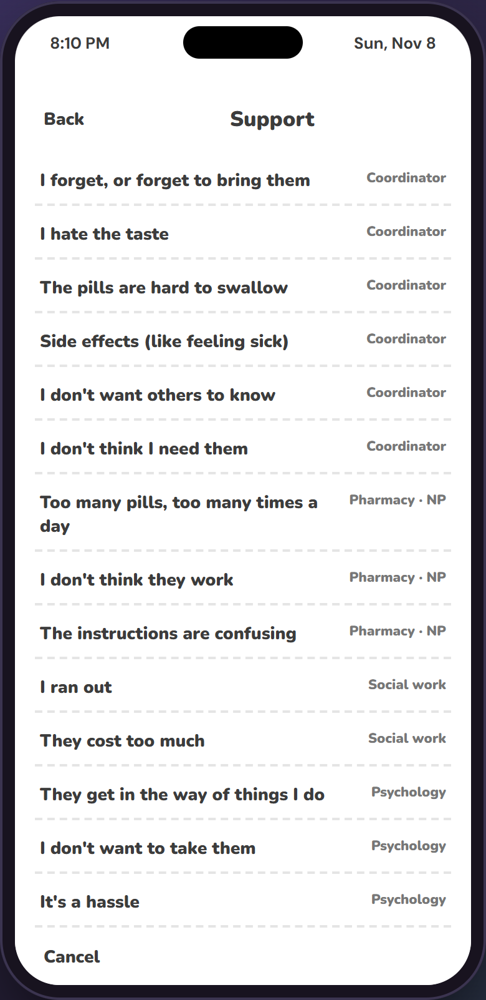
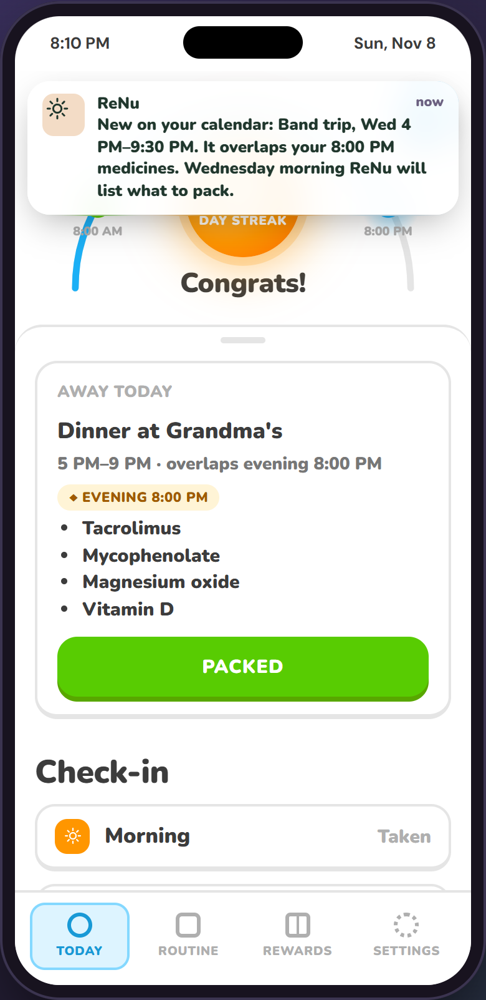
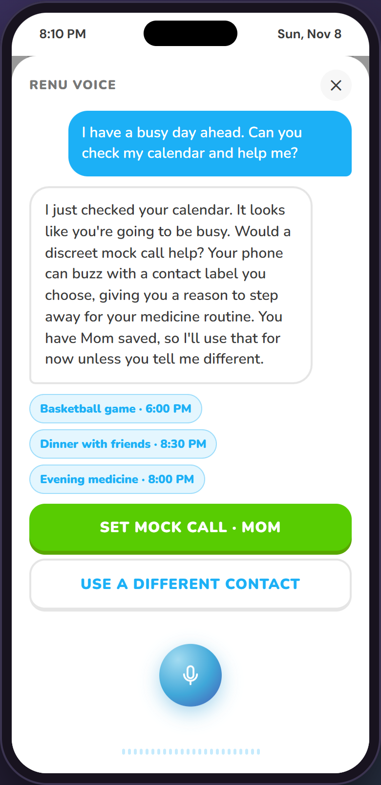
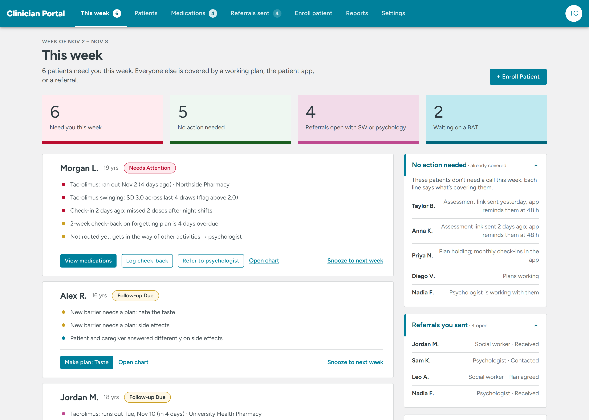
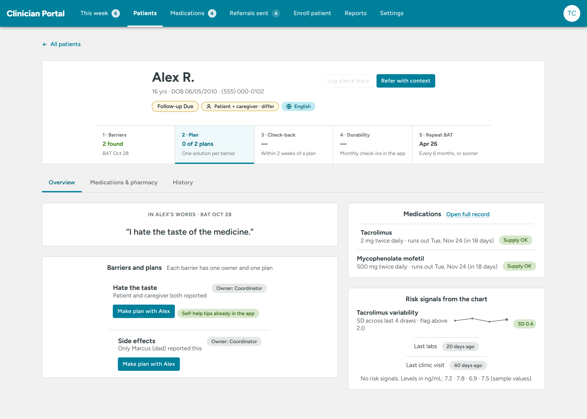
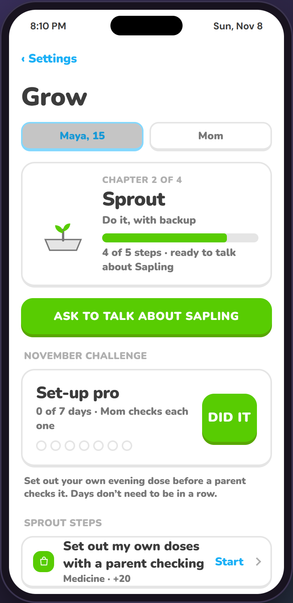

Keeps the MAPS loop running between visits,
for teens with a kidney transplant and the team behind them.
Teen appCare-team portalParent view

KTx-CONNECT (DEAP) · Cincinnati Children's hackathon
The problem
Their transplants fail at about 3× the rate of other ages. Failure usually means dialysis again. And most missed doses happen at home, between visits, where nobody on the team can see.
Source: KTx-CONNECT Builder Packet
What already works
late acute rejection after MAPS
(1.61 → 0.88 per 100 patient-months)
saved per patient,
+0.32 quality-adjusted life years
barriers found at CCHMC had
no recorded next step
Most centers can't staff that. Even at Cincinnati Children's, follow-through leaks.
Hooper et al. (AJKD); Varnell et al. 2022
What ReNu does
Teen taps "what's hard" any day, in their own words. Parent answers separately.
Routed to the named owner from the 14-item BAT. One plan per barrier, made with the teen.
Check-back due in 14 days lands on the coordinator's weekly list. Nothing slips.
For the teen · Today

For the teen · Busy days


For the care team


Your 5 questions
She opens "This week": 6 cards, one button each. No per-event alerts. Same-day items only for refusal or safety.
Routed to a person, not a chatbot. "Someone reaches out within 1–2 days." We never argue in the app.
Their own answers and plans the teen shares. Not the teen's answers or notes. Access ends at 18 unless the teen keeps it.
Grow chapters hand over responsibility step by step, with parent sign-off. Calendar help stays useful. No streak that punishes a missed day.
One switch: psychology barriers route to social work, refusal to a community referral. Routing is per center.
How we'd measure it
Every positive barrier gets an owner and a plan. Baseline: 29 of 36 at CCHMC.
Share of check-backs logged within 14 days: working, not working, or adjust.
Coordinator minutes per patient per month on calls and data entry (target).
Variability across the last 4 draws. The outcome that predicts rejection.
Cost bar: a MAPS-like program stays cost-effective up to about $1,880 per patient per year.
The ask
Thank you!
